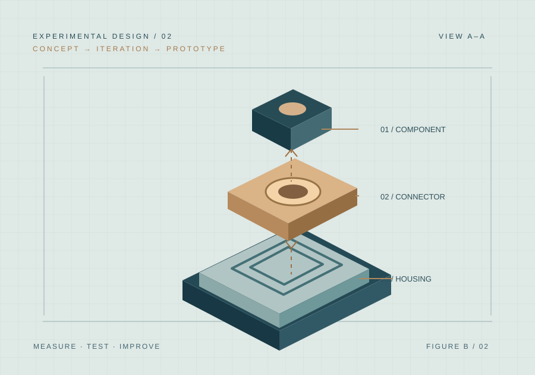

ENGINEERING / DESIGN01
Design for access.
Investigate a genuine usability problem and propose a practical, low-risk physical solution with design rationale and testing.
Applied projects and innovation challenges put professional skills into practice through real constraints, expert guidance, and tangible work—not just lectures or networking.
Our planned projects will pair participants with qualified advisors and appropriate community or educational partners to investigate problems, develop solutions, and present their work.
Projects and competitions are in design. Illustrative briefs below show the intended standard—not confirmed programs or partner commitments.
Suggest a projectWork individually or in teams on a well-scoped educational brief. Present a concept or prototype to experienced reviewers and receive constructive feedback.
Collaborate in a supervised team on a community-benefiting problem with real users, constraints, and a meaningful final deliverable.
These examples indicate the type of work we'd like to develop with authorized partners.
Investigate a genuine usability problem and propose a practical, low-risk physical solution with design rationale and testing.
Analyze sample operational data for a community organization and propose a more effective process or reporting approach.
Develop an educational prototype to make historic materials or a cultural collection more accessible to the public.
A credible applied project has clear boundaries, an educational purpose, an advisor, and a deliverable. This illustrative design challenge shows how we would define them.

CONCEPT EXAMPLE / NOT AN ACTIVE PROJECTTeams propose a low-risk, portable organizational tool for a hypothetical community space with limited storage and assembly time.
Skills and outcomes are documented before a project begins.
Appropriate expert guidance, approvals, and scope.
Fair workload, transparent IP rules, accessible scheduling, and educational purpose.
Work, feedback, and reflection participants can use afterward.